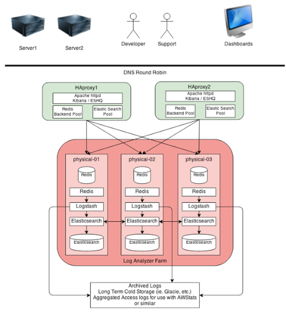

ELK
What is it?
-
Elastic Search
- Can be used as a document based NoSQL datastore, as one stop shop for storing searching and statistics
- Out of the box horizontally scalable
- Has HTTP Rest query interface - JSON
-
LogStash
- A tool used to collect logs, parse them, store them for searching
- Works with n number of input/output, easy to configure
- Allows for unstructured JSON logs, creates a dynamic schema that it is good for logs
-
Kibana
- A dashboard that lets you analyze your logs
- Make your own dashboard using the Lucene search query
- Making your own dashboard
Setting it up -> Ashish to give demo
OUR ELK Setup

Procedure
- NEED TO ADD LINK TO CONFLUENCE PAGE
Setting up the index
Need to show configuration of how logstash is setup
How the logs are parsed and indexed
logstash-overview.png
Setting up Kibana -> install and forget.